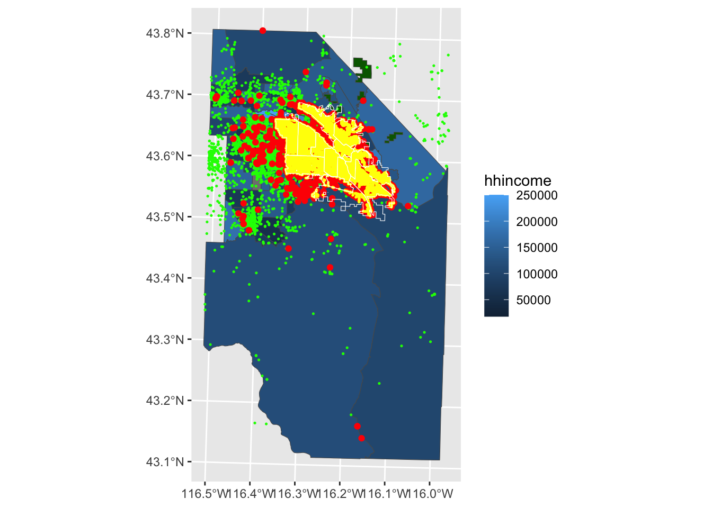
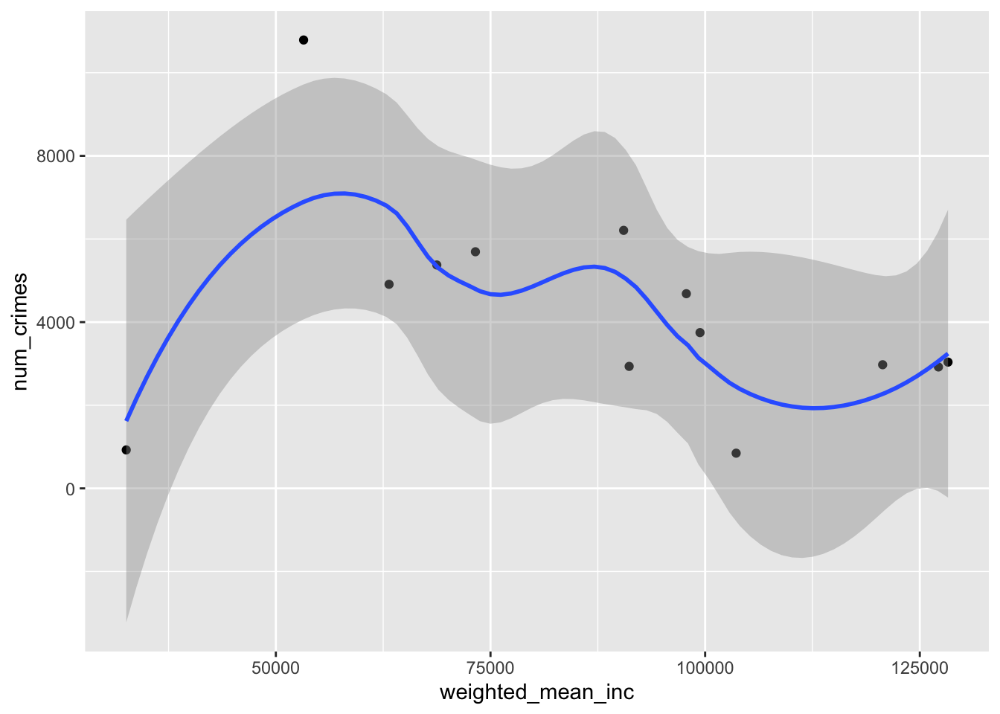
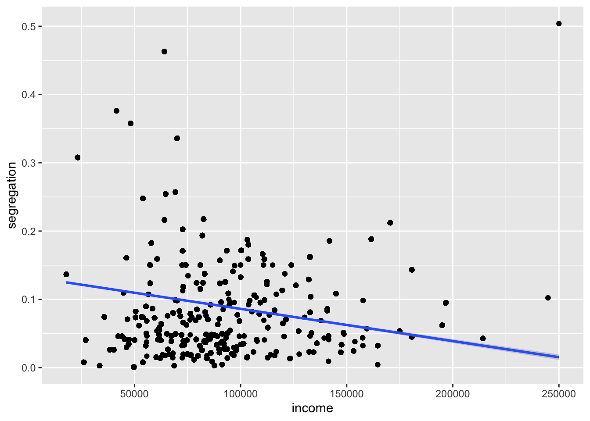

First, we’ll have to get our credentials and login to a new RStudio session. You can create your own repository if you’d like to track these things. You’ll have to copy your googledrive download function from a previous repo.
We’re going to work through this in class and I’ll update this once we’re done. I’ve adjusted the headings here to reflect the generic workflow pseudocode you provided in-class. I’ll try to add some narrative to help remind you what we were doing.
Load Packages and functions
Code
library(tidyverse)
── Attaching core tidyverse packages ──────────────────────── tidyverse 2.0.0 ──
✔ dplyr 1.1.4 ✔ readr 2.1.5
✔ forcats 1.0.1 ✔ stringr 1.5.2
✔ ggplot2 4.0.0 ✔ tibble 3.3.0
✔ lubridate 1.9.4 ✔ tidyr 1.3.1
✔ purrr 1.1.0
── Conflicts ────────────────────────────────────────── tidyverse_conflicts() ──
✖ dplyr::filter() masks stats::filter()
✖ dplyr::lag() masks stats::lag()
ℹ Use the conflicted package (<http://conflicted.r-lib.org/>) to force all conflicts to become errors
Code
library(sf)
Linking to GEOS 3.13.0, GDAL 3.8.5, PROJ 9.5.1; sf_use_s2() is TRUE
Code
library(terra)
terra 1.8.70
Attaching package: 'terra'
The following object is masked from 'package:tidyr':
extract
Code
library(googledrive)library(tigris)
To enable caching of data, set `options(tigris_use_cache = TRUE)`
in your R script or .Rprofile.
Attaching package: 'tigris'
The following object is masked from 'package:terra':
blocks
Code
library(tidyterra)
Attaching package: 'tidyterra'
The following object is masked from 'package:stats':
filter
! Using an auto-discovered, cached token.
To suppress this message, modify your code or options to clearly consent to
the use of a cached token.
See gargle's "Non-interactive auth" vignette for more details:
<https://gargle.r-lib.org/articles/non-interactive-auth.html>
ℹ The googledrive package is using a cached token for
'mattwilliamson@boisestate.edu'.
In class, we created a new function to read, reproject, and crop our data to a common location and crs. I’ll add that here so that we can call it down the road and avoid all of the hacky copy-and-pasting I was doing. I’ve given the function a descriptive name. I’ve also provided 3 arguments (filepath, target_crs, and crop_region) and given them better names to help make it more obvious what we’re looking for. I’ve also added a last “safety” step to make the geometries valid.
Now that we have our function, let’s load in the data. In class, we just used one of our objects to provide the “Boise Study Area”, but we might want a more systematic selection for our area-of-interest (AOI). We’ll use the tigris package to download the geometry for the Boise Metro Area and use that as our template. We combine that with a filter and str_detect call to look for any row containing characters matching “Boise”. Finally, we reproject the data to our chosen projection EPSG:8826 (chosen because mercator projections are best for measuring distance, though in a geography this small, you’d have a hard time noticing the difference).
Now that we’ve got our crop_region let’s use our new function to read in all of the shapefiles. We can do that by using list.files with a regular expression to get all of the .shp files in our data folder. We then use our new function with map to create a list of projected, cropped shapefiles. Once we’ve got that, we want to give the shapefiles in each slot of the list a more intuitive name - which we do using names (using a str_remove from the stringr package to clean up the filenames returned by basenames()). Finally, we use map_dfr to create a summary dataframe returning the number of invalid geometries in each slot in our list. Everything looks good (no invalid geometries) so far!
Warning: attribute variables are assumed to be spatially constant throughout
all geometries
Warning: attribute variables are assumed to be spatially constant throughout
all geometries
Warning: attribute variables are assumed to be spatially constant throughout
all geometries
Warning in CPL_read_ogr(dsn, layer, query, as.character(options), quiet, : GDAL
Message 1:
/Users/mattwilliamson/Websites/isdrfall2025/data/original/inclass12/Parks.shp
contains polygon(s) with rings with invalid winding order. Autocorrecting them,
but that shapefile should be corrected using ogr2ogr for example.
Warning: attribute variables are assumed to be spatially constant throughout
all geometries
Warning: attribute variables are assumed to be spatially constant throughout
all geometries
Now, we could leave all of the shapefiles in the list and access them by name for our subsequent operations, but that’s a little clunky. Instead, we’ll use assign to bring them into our Global Environment as individual objects. We’ll use walk2 from the purrr package because we are interested in the side effects of our iteration which in this case is whatever happens when we run assign. We don’t use map because we aren’t interested in keeping the results of assign we just want to run it over each combination of names(shp_list) and shp_list.
Assigning objects into your environment can be risky. You can inadvertently overwrite functions or other objects. Make sure if you do this that the values you assign in the names call aren’t shared with anything else you might need.
The last thing we need is the actual crimes dataset which we got as a .csv from the Boise Open Data portal. If you go to the information page for the file you’ll see the CRS which we’ll use to create an sf object from the .csv file.
Rows: 57751 Columns: 33
── Column specification ────────────────────────────────────────────────────────
Delimiter: ","
chr (24): DRNumber, IncidentType, CrimeCode, CrimeCodeDescription, CrimeCode...
dbl (9): OBJECTID, ChargeID, District, Occurred_HR, Occurred_MO, Occurred_D...
ℹ Use `spec()` to retrieve the full column specification for this data.
ℹ Specify the column types or set `show_col_types = FALSE` to quiet this message.
Warning: attribute variables are assumed to be spatially constant throughout
all geometries
Now that we’ve got everything into our environment, let’s plot them to see how things look. You’ll notice that I use a series of geom_sf calls to layer the data. I only use the aes function to map the color of each polygon in our demographics dataset to a variable. All of the other colors are set universally (i.e., outside of the mapping argument).
Code
ggplot() +geom_sf(data = boiseDemo, aes(fill = hhincome)) +geom_sf(data = Parks, fill ="darkgreen")+geom_sf(data = adaPlaces, fill ="transparent", color ="green", size =0.25) +geom_sf(data = boise_crimes, fill ="transparent", color ="red") +geom_sf(data = StreetLights, fill ="transparent", color ="yellow",size=0.25) +geom_sf(data = BPDPatrolAreas, fill ="transparent", color ="white")

You can see that the Census considers large parts of Canyon and Owyhee Counties to be part of the Boise Combined Statistical Area. That makes sense for a lot of things, but in this case we don’t have crime data for those locations. We’ll want to think about that when we’re generating our various variables. Because the crimes dataset extends out to our larger demographic data, we’ll use the boiseDemo dataset as our primary AOI.
Calculate Dependent Variables
Using Rasters
In order to explore the correlation of crimes in Boise with other features, we need to figure out how we want to think about crimes. In class, we thought about a continuous surface of distance between crimes as a way of looking for places where crimes are common (distance is low) vs. uncommon (distance high). We’ll use a template raster of 50m resolution to ease computation, but remember the choice of resolution implies a particular scale of inquiry which we hope will align with the mechanisms with think are operating.
Maybe we are more interested in something like density of crimes. We could express that as a raster. We do that using rasterize and supplying count as the parameter for the fun argument. This tells terra to count all the points in each of our 50m cells.
The initial plot(dens_crimes) makes it difficult to see much (as the number of crimes in a cell is rarely more than 1). I added the plot(log(dens_crimes)) to help you see where crimes actually occur (as the log(0) is -Inf and thus plots as NA).
Summarizing Across Vectors
Rather than express crime as some sort of continuous field (raster), we might want to aggregate crimes to one of our existing vector geometries. We might choose to count crimes in each Police District or in each Census block group. I’ll demonstrate two versions of this:
In the first, more verbose version, I’m demonstrating the use of count with a left_join. It’s a bit clunky, but for large datasets, the dropping of geometry can make the calculation go faster and also makes for a bit more readable code. In the second version, I’m using a spatial predicate (which returns TRUE/FALSE) to count the number of crimes that intersect the polygons of boiseDemo and assigning it (using $) to a new column called count.
Calculate Independent Variables
As Rasters
In class, we talked about buffering each streetlight point based on a rough approximation of the area they illuminate. We’ll replicate that here, but use a bit more of a sophisticated approach. First, we assign an “illumination factor” by using the case_when function which works as a multiple if_else or iflese (use ?if_else to learn more about these conditional evaluation functions). Then we calculate an illumination radius based on the wattage or the overal average wattage (if the light has NA for these values). Finally, we pipe this into st_buffer to convert the points into polygons that are sized according to illumination.
We can do the same thing for parks (but without buffering). We have to add st_cast because vect() doesn’t know how to deal with a GEOMETRYCOLLECTION spatial class. You’ll get some warnings about the first part of the geometry collection being retained. In this case, it’s because the City of Boise serves this as both a polygon and point dataset (and we’re using the polygons.)
Code
dist_parks <-distance(x = template_rst,y =vect(st_cast(Parks, to ="MULTIPOLYGON")),rasterize =TRUE)
Warning in st_cast.GEOMETRYCOLLECTION(X[[i]], ...): only first part of
geometrycollection is retained
Warning in st_cast.GEOMETRYCOLLECTION(X[[i]], ...): only first part of
geometrycollection is retained
Code
dens_parks <-rasterize(x =vect(st_cast(Parks, to ="MULTIPOLYGON")),y = template_rst,fun ="count",background =0)
Warning in st_cast.GEOMETRYCOLLECTION(X[[i]], ...): only first part of
geometrycollection is retained
Warning in st_cast.GEOMETRYCOLLECTION(X[[i]], ...): only first part of
geometrycollection is retained
You could do this for a (possibly filtered) version of the adaPlaces, but the syntax is basically the same so I won’t show it here. Instead, we’ll rasterize 2 of our demographic datasets. Instead of providing a parameter for the fun argument, we’ll use the field argument and pass it the name of the column we’d like to rasterize. You’ll also notice that I don’t supply a background argument which means that NAs will remain in the resulting raster.
One way to get at the correlation between variables is to look at correlations in the crimes rasters and the other predictor rasters. We can use the cor function for that, but we need to convert the SpatRasters to matrices. That’s pretty easy using the as.matrix function (you can find a lot of as._ coercion functions by typing ?as.matrix). Because we have NA in some of our Census data, we provide "complete" to the use argument of cor to have the correlation restricted to complete observations (those where there is no NA in any of the rasters being considered)
Remember that our dist_crimes is the distance from the nearest crime. So a positive correlation with population means that as population goes up so does the distance to a crime. Alternatively, the negative correlation with income means that as income goes up, the distance between crimes goes down.
Alternatively, we might want to summarize some of our variables to our boise police district data. We can do this by using using st_intersection (which returns the geometry of overlap between our crimes_per_bpd data and our demographic data), calculating the proportion of area overlapped for each blockgroup (the weight variable below), and then caluculating a weighted mean for each police district.
Warning: attribute variables are assumed to be spatially constant throughout
all geometries
Joining with `by = join_by(PoliceArea)`
We could also calculate a weighted average using terra::extract. Use extract essentially produces a weighted average because each cell in a police district is given the value of whichever polygon it came from. As such, when we calculate the mean it is based on the proportional composition of the polygons that were used to create that raster.
In the future, you might actually want to fit a model to the crimes data where you need multiple predictors and want to focus only on where crimes are (rather than some sort of correlation across the entirety of the field. One easy way to do that is to extract our predictors from each raster to the locations in our crimes dataset. Let’s use terra::extract (note that I’m calling it explicitly because of the conflict with dplyr::extract). The result is a dataframe with the number of rows equal to our crimes dataset and the number of columns equal to the number of rasters. You’ll notice that I’m providing the names to the combined dataset to make it easier to identify each variable in the resulting dataframe.
Code
crimes_ext <- terra::extract(x = predictor_rsts, y =vect(boise_crimes))
Plot and Summarize
Thinking through the correlations in this data can be a little tricky. We might start with the summarized data. We can use ggplot to do this. We use the mapping argument to specify that we want the x-axis to be the weighted mean of income and the y-axis to be the number of crimes. We use geom_point() to tell ggplot that we want a dotplot and then add geom_smooth() to add a smoothed (in this case using the loess smoother) illustrate the relationship.
`geom_smooth()` using method = 'loess' and formula = 'y ~ x'

Based on the aggregated data, we see that most of the crimes occur in the lower to middle ranges of income, but the correlation is not particularly obvious. Perhaps that’s because there is some other variable that’s correlated with income. We can use our extracted raster data to see if that might be the case.
Warning: Removed 848 rows containing non-finite outside the scale range
(`stat_smooth()`).
Warning: Removed 848 rows containing missing values or values outside the scale range
(`geom_point()`).

Based on this plot, it would appear (if you squint at the line) that areas with high incomes tend to have lower segregation than areas with low income. We also see that there are some very high segregation values right in the same income range where we see the peak in the aggregated crimes data. Based on this, what might your next steps be?
Source Code
---title: "Building Spatial Databases"---## Getting StartedFirst, we'll have to [get our credentials](https://rstudio.aws.boisestate.edu/) and login to a [new RStudio session](https://rstudio.apps.aws.boisestate.edu/). You can create your own repository if you'd like to track these things. You'll have to copy your googledrive download function from a previous repo.We're going to work through this in class and I'll update this once we're done. I've adjusted the headings here to reflect the generic workflow pseudocode you provided in-class. I'll try to add some narrative to help remind you what we were doing.## Load Packages and functions```{r ldpkg}library(tidyverse)library(sf)library(terra)library(googledrive)library(tigris)library(tidyterra)source("scripts/utilities/download_utils.R")file_list <-drive_ls(drive_get(as_id("https://drive.google.com/drive/folders/1BY24_G3bp6gfbu3BaioZb_eS0nzCwq7a?dmr=1&ec=wgc-drive-globalnav-goto")))file_list %>% dplyr::select(id, name) %>% purrr::pmap(function(id, name) {gdrive_folder_download(list(id = id, name = name),dstfldr ="inclass12") })```In class, we created a new function to read, reproject, and crop our data to a common location and crs. I'll add that here so that we can call it down the road and avoid all of the hacky copy-and-pasting I was doing. I've given the function a descriptive name. I've also provided 3 arguments (`filepath`, `target_crs`, and `crop_region`) and given them better names to help make it more obvious what we're looking for. I've also added a last "safety" step to make the geometries valid.```{r sputilsfun}read_project_crop <-function(filepath, target_crs, crop_region) { shp <-st_read(filepath, quiet =TRUE) %>%st_transform(., target_crs) %>%st_crop(., crop_region) %>%st_make_valid(.)return(shp)}```## Read in the data and reprojectNow that we have our function, let's load in the data. In class, we just used one of our objects to provide the "Boise Study Area", but we might want a more systematic selection for our area-of-interest (AOI). We'll use the `tigris` package to download the geometry for the Boise Metro Area and use that as our template. We combine that with a `filter` and `str_detect` call to look for any row containing characters matching "Boise". Finally, we reproject the data to our chosen projection `EPSG:8826` (chosen because mercator projections are best for measuring distance, though in a geography this small, you'd have a hard time noticing the difference).```{r ldbdry}boise_metro <-core_based_statistical_areas(cb =TRUE, year =2020, progress_bar =FALSE) %>%filter(str_detect(NAME, "Boise") ) %>%st_transform(., crs ="EPSG:8826")plot(boise_metro$geometry)```Now that we've got our `crop_region` let's use our new function to read in all of the shapefiles. We can do that by using `list.files` with a regular expression to get all of the `.shp` files in our data folder. We then use our new function with `map` to create a list of projected, cropped shapefiles. Once we've got that, we want to give the shapefiles in each slot of the list a more intuitive name - which we do using `names` (using a `str_remove` from the `stringr` package to clean up the filenames returned by `basenames()`). Finally, we use `map_dfr` to create a summary dataframe returning the number of invalid geometries in each `slot` in our list. Everything looks good (no invalid geometries) so far!```{r rddata}shapefile_paths <-list.files("data/original/inclass12", pattern ="\\.shp$", full.names =TRUE)shp_list <- shapefile_paths %>%map(., function(x) read_project_crop(filepath = x , target_crs ="EPSG:8826", crop_region = boise_metro) )names(shp_list) <- shapefile_paths %>%basename() %>%str_remove("\\.shp$")validity_summary <-map_dfr( shp_list,~ { v <-st_is_valid(.x)tibble(n_total =length(v),n_valid =sum(v),n_invalid =sum(!v),pct_valid =mean(v) ) },.id ="layer")```Now, we could leave all of the shapefiles in the list and access them by name for our subsequent operations, but that's a little clunky. Instead, we'll use `assign` to bring them into our Global Environment as individual objects. We'll use `walk2` from the `purrr` package because we are interested in the _side effects_ of our iteration which in this case is whatever happens when we run `assign`. We don't use `map` because we aren't interested in keeping the results of `assign` we just want to run it over each combination of `names(shp_list)` and `shp_list`. ```{r assignenv}walk2(names(shp_list), shp_list, ~assign(.x, .y, envir = .GlobalEnv))```::: {.callout-warning}Assigning objects into your environment can be risky. You can inadvertently overwrite functions or other objects. Make sure if you do this that the values you assign in the `names` call aren't shared with anything else you might need.:::The last thing we need is the actual crimes dataset which we got as a `.csv` from the [Boise Open Data portal](https://city-of-boise.opendata.arcgis.com/search). If you go to the [information page for the file](https://services1.arcgis.com/WHM6qC35aMtyAAlN/arcgis/rest/services/BPD_Crimes_Public/FeatureServer/0) you'll see the CRS which we'll use to create an `sf` object from the `.csv` file.```{r rdcrimes}boise_crimes <-read_csv("data/original/inclass10/BPDCrimesPublic.csv" ) %>%st_as_sf(., coords =c('x', 'y'), crs ="ESRI:102459") %>%st_transform(., crs ="EPSG:8826") %>%st_crop(., boise_metro)```Now that we've got everything into our environment, let's plot them to see how things look. You'll notice that I use a series of `geom_sf` calls to layer the data. I only use the `aes` function to map the color of each polygon in our demographics dataset to a variable. All of the other colors are set universally (i.e., outside of the `mapping` argument).```{r pltshps}ggplot() +geom_sf(data = boiseDemo, aes(fill = hhincome)) +geom_sf(data = Parks, fill ="darkgreen")+geom_sf(data = adaPlaces, fill ="transparent", color ="green", size =0.25) +geom_sf(data = boise_crimes, fill ="transparent", color ="red") +geom_sf(data = StreetLights, fill ="transparent", color ="yellow",size=0.25) +geom_sf(data = BPDPatrolAreas, fill ="transparent", color ="white") ```You can see that the Census considers large parts of Canyon and Owyhee Counties to be part of the Boise Combined Statistical Area. That makes sense for a lot of things, but in this case we don't have crime data for those locations. We'll want to think about that when we're generating our various variables. Because the crimes dataset extends out to our larger demographic data, we'll use the `boiseDemo` dataset as our primary AOI.## Calculate Dependent Variables### Using RastersIn order to explore the correlation of crimes in Boise with other features, we need to figure out how we want to think about crimes. In class, we thought about a continuous surface of distance between crimes as a way of looking for places where crimes are common (distance is low) vs. uncommon (distance high). We'll use a template raster of 50m resolution to ease computation, but remember the choice of resolution implies a particular _scale_ of inquiry which we hope will align with the mechanisms with think are operating.```{r summarize}template_rst <-rast(res =c(50,50),crs=crs(boiseDemo), extent =ext(boiseDemo))dist_crimes <-distance(x = template_rst,y =vect(boise_crimes),rasterize =TRUE)plot(dist_crimes)```Maybe we are more interested in something like density of crimes. We could express that as a raster. We do that using `rasterize` and supplying `count` as the parameter for the `fun` argument. This tells `terra` to count all the points in each of our 50m cells.```{r sumdens}dens_crimes <-rasterize(x =vect(boise_crimes),y = template_rst,fun ="count",background =0)plot(dens_crimes)plot(log(dens_crimes))```The initial `plot(dens_crimes)` makes it difficult to see much (as the number of crimes in a cell is rarely more than 1). I added the `plot(log(dens_crimes))` to help you see where crimes actually occur (as the `log(0)` is `-Inf` and thus plots as `NA`).### Summarizing Across VectorsRather than express crime as some sort of continuous field (raster), we might want to aggregate crimes to one of our existing vector geometries. We might choose to count crimes in each Police District or in each Census block group. I'll demonstrate two versions of this:```{r ctcrimes}crimes_in_bpd <-st_join(boise_crimes, BPDPatrolAreas)counts <- crimes_in_bpd %>%st_drop_geometry() %>%count(polygon_id = PoliceArea)crimes_per_bpd <- BPDPatrolAreas %>%left_join(counts, by =c("PoliceArea"="polygon_id")) %>%mutate(num_crimes =replace_na(n, 0))boiseDemo$count <-lengths(st_intersects(boiseDemo, boise_crimes))```In the first, more verbose version, I'm demonstrating the use of `count` with a `left_join`. It's a bit clunky, but for large datasets, the dropping of geometry can make the calculation go faster and also makes for a bit more readable code. In the second version, I'm using a spatial **predicate** (which returns `TRUE/FALSE`) to count the number of crimes that intersect the polygons of `boiseDemo` and assigning it (using `$`) to a new column called `count`.## Calculate Independent Variables### As RastersIn class, we talked about buffering each streetlight point based on a rough approximation of the area they illuminate. We'll replicate that here, but use a bit more of a sophisticated approach. First, we assign an "illumination factor" by using the `case_when` function which works as a multiple `if_else` or `iflese` (use `?if_else` to learn more about these conditional evaluation functions). Then we calculate an illumination radius based on the wattage or the overal average wattage (if the light has `NA` for these values). Finally, we pipe this into `st_buffer` to convert the points into polygons that are sized according to illumination.```{r ltbuf}streetlights_buffered <- StreetLights %>%mutate(type_factor =case_when( Lamp_Type =="LED"~1.2, Lamp_Type =="High Pressure Sodium"~1.0, Lamp_Type =="Solar"~0.8,TRUE~1 ),radius =if_else(is.na(Wattage), 0.5*sqrt(mean(Wattage, na.rm =TRUE)) * type_factor,0.5*sqrt(Wattage) * type_factor) ) %>%st_buffer(., dist = .$radius)```Now that we've got that, we can calculate our distance and density rasters using the same approach that we did for crimes.```{r ltrst}dist_lights <-distance(x = template_rst,y =vect(streetlights_buffered),rasterize =TRUE)dens_lights <-rasterize(x =vect(streetlights_buffered),y = template_rst,fun ="count",background =0)```We can do the same thing for parks (but without buffering). We have to add `st_cast` because `vect()` doesn't know how to deal with a `GEOMETRYCOLLECTION` spatial class. You'll get some warnings about the first part of the geometry collection being retained. In this case, it's because the City of Boise serves this as both a polygon and point dataset (and we're using the polygons.)```{r pkrst}dist_parks <-distance(x = template_rst,y =vect(st_cast(Parks, to ="MULTIPOLYGON")),rasterize =TRUE)dens_parks <-rasterize(x =vect(st_cast(Parks, to ="MULTIPOLYGON")),y = template_rst,fun ="count",background =0)```You could do this for a (possibly filtered) version of the `adaPlaces`, but the syntax is basically the same so I won't show it here. Instead, we'll rasterize 2 of our demographic datasets. Instead of providing a parameter for the `fun` argument, we'll use the `field` argument and pass it the name of the column we'd like to rasterize. You'll also notice that I don't supply a `background` argument which means that `NA`s will remain in the resulting raster.```{r demorst}income_rst <-rasterize(x =vect( boiseDemo),y = template_rst,field ="hhincome")segregation_rst <-rasterize(x =vect( boiseDemo),y = template_rst,field ="ls")population_rst <-rasterize(x =vect( boiseDemo),y = template_rst,field ="totalpop")```Let's bundle all of these together so that we can make life easier later. We can do that by combining our rasters (using `c` for `concatenate`).```{r bundle}predictor_rsts <-c(dist_lights, dens_lights, dist_parks, dens_parks, income_rst, segregation_rst, population_rst)names(predictor_rsts) <-c("dist_lights", "dens_lights", "dist_parks", "dens_parks", "income", "segregation", "population")```## Extract x to yOne way to get at the correlation between variables is to look at correlations in the crimes rasters and the other predictor rasters. We can use the `cor` function for that, but we need to convert the `SpatRasters` to matrices. That's pretty easy using the `as.matrix` function (you can find a lot of `as._` coercion functions by typing `?as.matrix`). Because we have `NA` in some of our Census data, we provide `"complete"` to the `use` argument of `cor` to have the correlation restricted to complete observations (those where there is no `NA` in any of the rasters being considered)```{r rstcor}cor(as.matrix(dist_crimes), as.matrix(population_rst), use="complete")cor(as.matrix(dist_crimes), as.matrix(income_rst), use="complete")cor(as.matrix(dist_crimes), as.matrix(dist_lights), use="complete")```Remember that our `dist_crimes` is the distance from the nearest crime. So a positive correlation with population means that as population goes up so does the distance to a crime. Alternatively, the negative correlation with income means that as income goes up, the distance between crimes goes down.Alternatively, we might want to summarize some of our variables to our boise police district data. We can do this by using using `st_intersection` (which returns the geometry of overlap between our crimes_per_bpd data and our demographic data), calculating the proportion of area overlapped for each blockgroup (the `weight` variable below), and then caluculating a weighted mean for each police district. ```{r arealsum}bpd_demo <-st_intersection(boiseDemo, crimes_per_bpd) %>%mutate(area =st_area(geometry)) %>%group_by(PoliceArea) %>%mutate(weight =as.numeric(area) /sum(as.numeric(area))) %>%summarize(weighted_mean_inc =sum(weight * hhincome, na.rm =TRUE)) %>%st_drop_geometry() %>%right_join(., crimes_per_bpd)```We could also calculate a weighted average using `terra::extract`. Use extract essentially produces a weighted average because each cell in a police district is given the value of whichever polygon it came from. As such, when we calculate the mean it is based on the proportional composition of the polygons that were used to create that raster.```{r extwtav}bpd_ext <- terra::extract(predictor_rsts, vect(crimes_per_bpd),fun = mean, na.rm =TRUE)```In the future, you might actually want to fit a model to the crimes data where you need multiple predictors and want to focus only on where crimes are (rather than some sort of correlation across the entirety of the field. One easy way to do that is to extract our predictors from each raster to the locations in our crimes dataset. Let's use `terra::extract` (note that I'm calling it explicitly because of the conflict with `dplyr::extract`). The result is a dataframe with the number of rows equal to our crimes dataset and the number of columns equal to the number of rasters. You'll notice that I'm providing the names to the combined dataset to make it easier to identify each variable in the resulting dataframe.```{r rstext}crimes_ext <- terra::extract(x = predictor_rsts, y =vect(boise_crimes))```## Plot and SummarizeThinking through the correlations in this data can be a little tricky. We might start with the summarized data. We can use `ggplot` to do this. We use the `mapping` argument to specify that we want the x-axis to be the weighted mean of income and the y-axis to be the number of crimes. We use `geom_point()` to tell `ggplot` that we want a dotplot and then add `geom_smooth()` to add a smoothed (in this case using the loess smoother) illustrate the relationship.```{r plt}ggplot(data = bpd_demo,mapping =aes(x = weighted_mean_inc, y = num_crimes)) +geom_point() +geom_smooth()```Based on the aggregated data, we see that most of the crimes occur in the lower to middle ranges of income, but the correlation is not particularly obvious. Perhaps that's because there is some other variable that's correlated with income. We can use our extracted raster data to see if that might be the case.```{r rstplot}ggplot(data = crimes_ext,mapping =aes(x = income, y = segregation)) +geom_point() +geom_smooth(method ="lm")```Based on this plot, it would appear (if you squint at the line) that areas with high incomes tend to have lower segregation than areas with low income. We also see that there are some very high segregation values right in the same income range where we see the peak in the aggregated crimes data. Based on this, what might your next steps be?